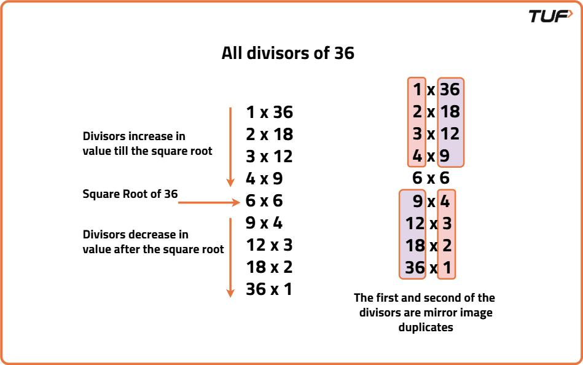

Print all Divisors of a given Number
Problem Statement: Given an integer N, return all divisors of N.
A divisor of an integer N is a positive integer that divides N without leaving a remainder. In other words, if N is divisible by another integer without any remainder, then that integer is considered a divisor of N.
Examples
Input: N = 36 Output: [1, 2, 3, 4, 6, 9, 12, 18, 36] Explanation: The divisors of 36 are 1, 2, 3, 4, 6, 9, 12, 18, 36. Input: N = 12 Output: [1, 2, 3, 4, 6, 12] Explanation: The divisors of 12 are 1, 2, 3, 4, 6, 12.
Disclaimer: Here is the practice link to help you assess your knowledge better. It's highly recommend trying to solve it before looking at the solution.
Brute Force Approach
Algorithm
The brute force approach to find all the divisors of a number is to iterate through every number from 1 to N and check whether it is a divisor or not. We can store all the divisors and return the list of divisors after iteration.
Code
#include <bits/stdc++.h>
using namespace std;
class Solution {
public:
// Function to find all divisors
vector<int> getDivisors(int N) {
// Create a vector to store divisors
vector<int> res;
// Loop from 1 to N
for (int i = 1; i <= N; i++) {
// Check if i is a divisor of N
if (N % i == 0) {
// Add i to the result
res.push_back(i);
}
}
// Return the list of divisors
return res;
}
};
int main() {
// Create object of Solution class
Solution sol;
// Input number
int N = 36;
// Call the function to get divisors
vector<int> result = sol.getDivisors(N);
// Print the result
cout << "Divisors of " << N << ": ";
for (int val : result) {
cout << val << " ";
}
cout << endl;
return 0;
}
Complexity Analysis
Time Complexity: O(N), we check for every number from 1 to N.Space Complexity: O(N), extra space used for storing divisors.
Optimal Approach
Algorithm
We can optimise the previous approach by using the property that for any non-negative integer n, if d is a divisor of n then n/d is also a divisor of n. This property is symmetric about the square root of N. Thus, by traversing just the first half we can avoid redundant iteration and computations improving the efficiency of the algorithm.

Iterate from 1 to sqrt(N) and for every divisor found, if N/divisor is distinct, add that to the list of divisors as well.Code
#include <bits/stdc++.h>
using namespace std;
class Solution {
public:
// Function to get all divisors
vector<int> getDivisors(int N) {
// Create a vector to store divisors
vector<int> res;
// Loop from 1 to square root of N
for (int i = 1; i * i <= N; i++) {
// Check if i divides N
if (N % i == 0) {
// Add i to the result
res.push_back(i);
// If N / i is different from i, add N / i too
if (i != N / i) {
res.push_back(N / i);
}
}
}
// Return the list of divisors
return res;
}
};
int main() {
// Create object of Solution class
Solution sol;
// Input number
int N = 36;
// Get divisors
vector<int> result = sol.getDivisors(N);
// Print the result
cout << "Divisors of " << N << ": ";
for (int val : result) {
cout << val << " ";
}
cout << endl;
return 0;
}
Complexity Analysis
Time Complexity: O(sqrt(N)), we check for every number between 1 and sqaure root of N.Space Complexity: O(2*sqrt(N)), extra space used for storing divisors.